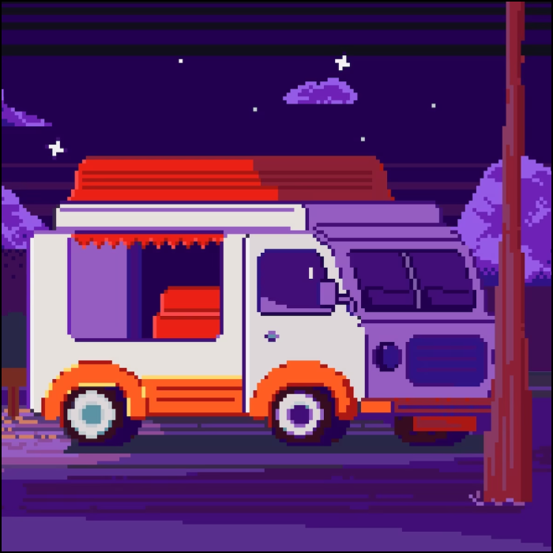

Фритрек и нулевой спринт: Подготовка к работе
</HTML>

Это было самое начало пути. На этом этапе важно было проникнуться основами и настроиться на учёбу. И, возможно, подумать, как новые знания могут повлиять на ваше будущее.
Я с нетерпением ждал начала обучения и в начале пути был очень воодушевлен. Но я не представлял насколько разнообразен HTML и CSS и ожидал перейти к JS намного раньше.